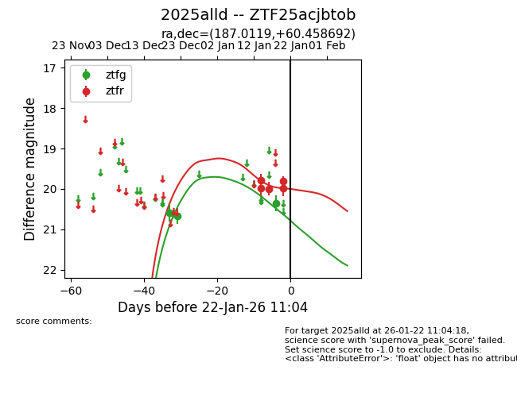
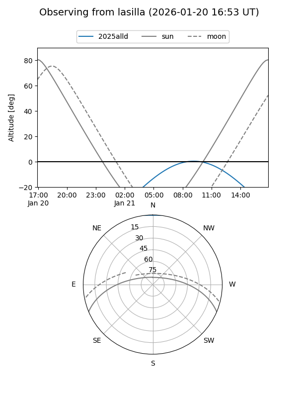
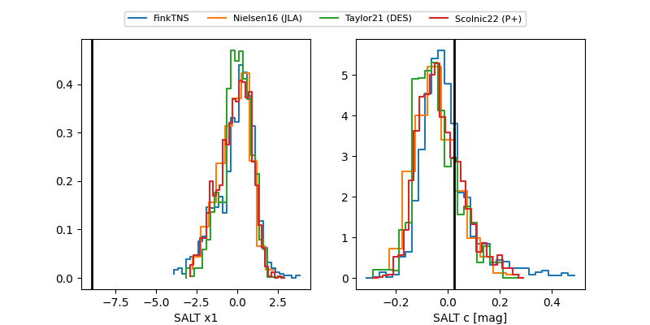

2025alld
Target 2025alld at 2026-01-14 15:05
Aliases and brokers:
FINK: link
Lasair: link
ALeRCE: link
TNS: link
YSE: link
alt names
ZTF25acjbtob (ztf,fink_ztf)
2025alld (tns,yse)
Coordinates:
equatorial (ra, dec) = 187.0119,+60.45869
equatorial (HMS+DMS) = 12:28:02.85,+60:27:31.29
galactic (l, b) = (128.1445,+56.43221)
Flags:
likely cv
Photometry:
last ztfg=20.67, ztfr=19.79
2 ztfg, 2 ztfr detections
Lightcurve

Visibility


Additional plots
